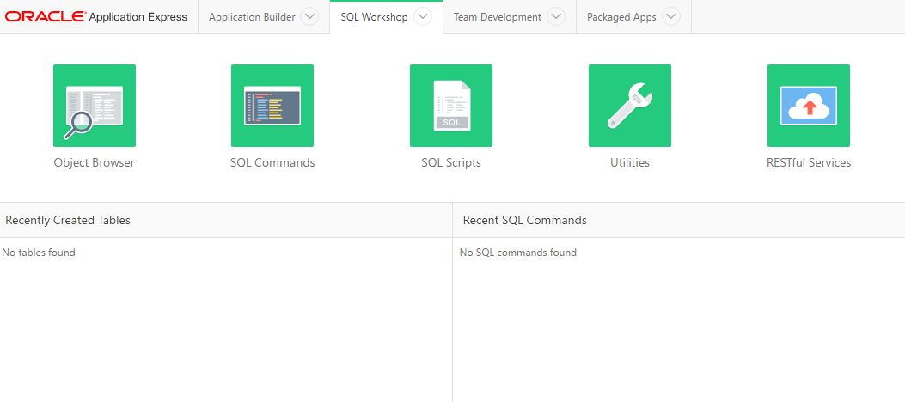
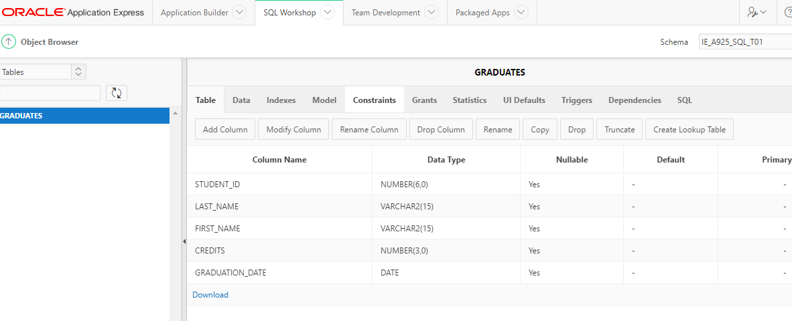

Objectives
This lab will put into practice the CREATE TABLE statement and the INSERT INTO statement.
Super and Subtype mapping
Transform the STAFF supertype in the following example, using the subtype or two table implementation.
Make sure you have a foreign key in each staff type to represent the recursive relationship between manager and staff.
Creating Tables
It is a useful exercise now to add to the table mappings you completed last week. In order to create a table we also need to know the datatype and the size of the column. It is also good practice to note if any other constraints are needed for each column.
For this reason we show our table mapping information as below:

Complete the GRADUATE table mapping chart. Credits is a foreign key column referencing the REQUIREMENTS table.

Next on paper, write the syntax to create the graduates table.
Oracle Application Express
Login in to application express:
Open a web browser and go to - https://iacademy3.oracle.com
Enter in the following:
workspace: IE_A925_SQL_S## username: IE_A925_SQL_S## password : eFuTX64%
You may have changed from your first password already. The username ends with two numbers given to you in class.
Once you get access you should see the following:

Click on SQL Workshop and you should see:

Click on SQL Commands and you should see:
You should have an SQL CREATE TABLE statement you can enter into the Commands box.
CREATE TABLE graduates
( student_id NUMBER(6),
last_name VARCHAR2(15),
first_name VARCHAR2(15),
credits NUMBER(3),
graduation_date DATE
);Click the Run button and you should receive a message in the results area to say Table careted. 0.01 seconds
Now confirm the table exists by right clicking on the second tab (SQL Workshop) choose open in a new tab.
Go to that tab and choose Object Browser from the SQL Workshop tab. When the table list loads in the left hand pane of the window, you should see the graduates table, click it to view the column details you just created.

In order to run just one statement in the commands box without the other statements running you must highlight the statement you wish to run and click run. Otherwise clicking run will execute all SQL contained in the command box.
Creating tables using a script
Download the following file:
In the SQL Workshop tab choose SQL Scripts
Click Upload
Click Browse and navigate to the file you just downloaded. Add a Script Name such as "SQL to add all tables", leave the Character set as the default (Unicode UTF-8) and click Upload.
You will now see the script listed.
Click the run icon and then click Run Now. This will take you to the manage scripts results page. If you click view results you will see there are errors as the DROP statements failed because the tables did not already exist. This is fine you can ignore those errors.
Next go to the Object Browser to confirm the tables are there.
Practice
From the lab last week you should have table mappings for shift, shift assignment, order, order line, frequent diner card, and food item. Add to these mappings so that you now have the appropriate data type and size for each column.
- Write a CREATE TABLE statement for each table.
- Run each statement and describe the table to ensure it exists.
INSERT statement
Make a copy of the d_cds table that is available in your database.
Insert four new rows of data into the table.
To confirm the data is in the table run the following statement:
SELECT * from copy_d_cds;DJs on Demand has two new events coming up. Make a copy of the d_songs table and then add these songs to the copy_d_songs table using an implicit INSERT.
Copy the d_clients table and insert the following data: